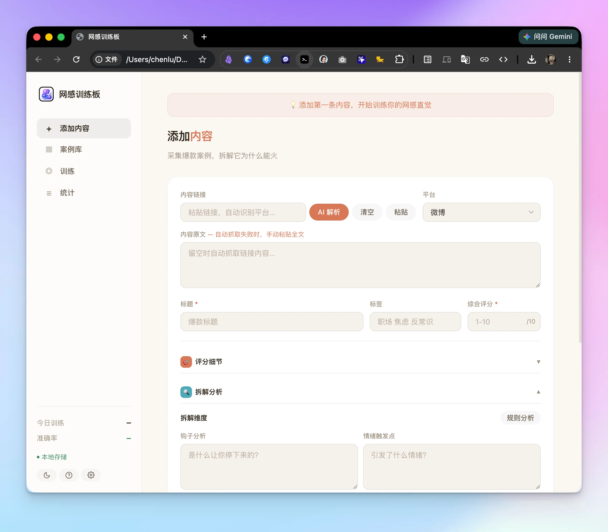
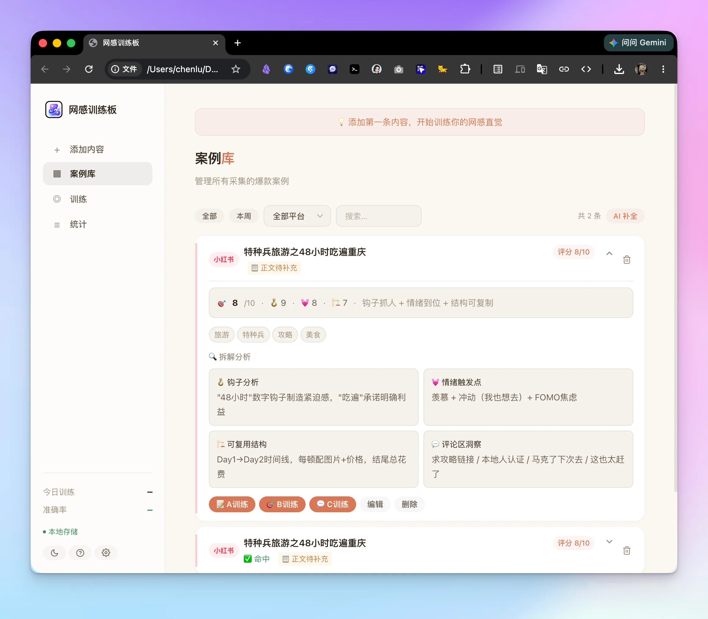
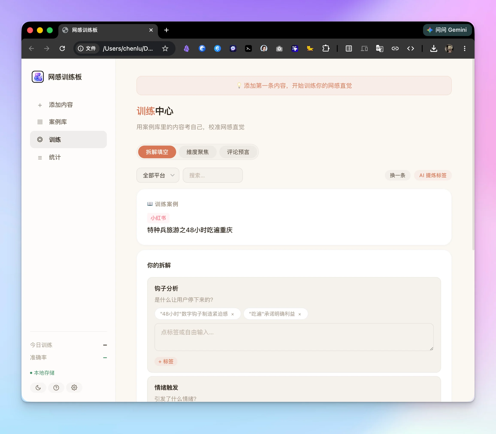
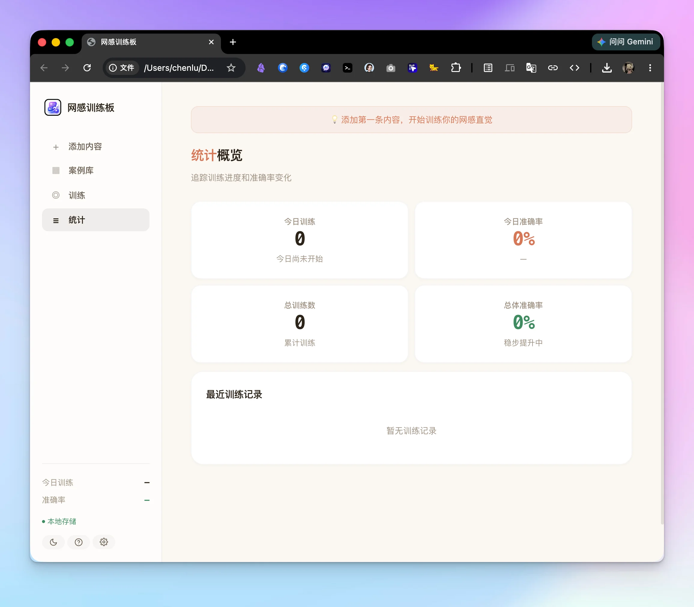
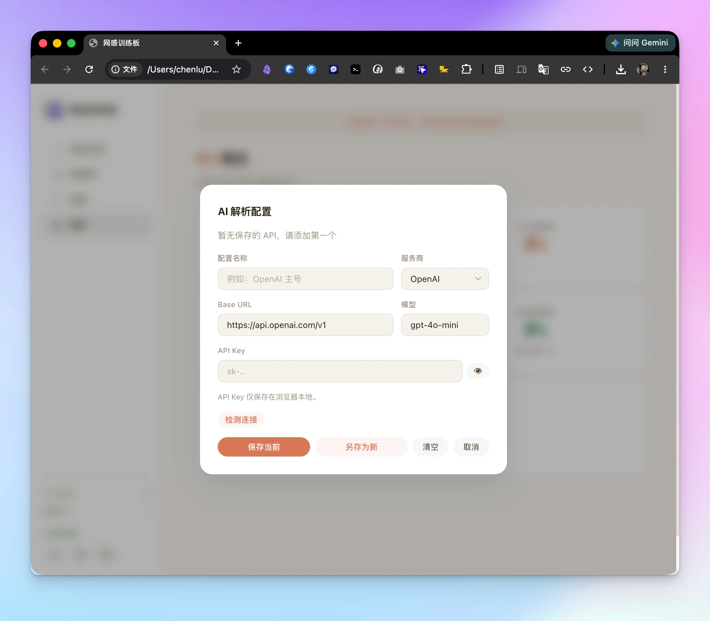
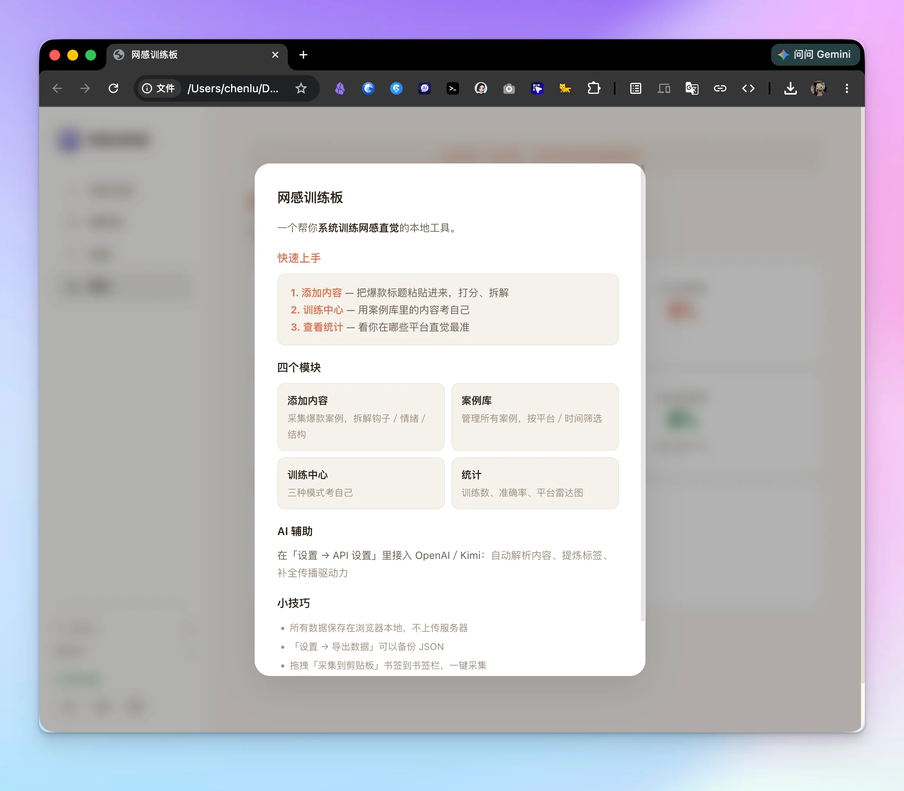

01 / 盲测预判打分板
Prediction隐藏实际播放数据，创作者针对封面张力、标题信息密度与前 3 秒钩子进行独立打分。
Predictive Sensibility Training Dashboard for Creators
内容行业习惯用“天赋”解释一切爆款，但极少有人尝试拆解这个黑箱。我们通过 Vibe Coding 独立研发了这款训练板——把抽象的“网感”拆解为 可量化、可反馈的评分维度。像做试卷一样对答案、找盲区、校准直觉。单条内容拆解提效 10 倍，爆款命中准确率从盲猜 40% 稳定提升至 70%。
没有即时反馈与数据标定的被动浏览，不仅不能积累网感，反而会加剧审美疲劳。
把偶然的爆款归因于运气，把失败归咎于算法。缺乏系统化的记录框架与可追溯的评分档案，无法形成可传承的方法论。
刷内容时只有模糊感觉，没有在看数据之前先给出量化预判。没有预测与真实数据的对撞，判断准确率始终停留在 40% 的随机水平。
点击下方任意截图即可全屏查看打分板、校准报告与数据流。支持在线体验。

隐藏实际播放数据，创作者针对封面张力、标题信息密度与前 3 秒钩子进行独立打分。

提交后实时揭晓全网真实表现，雷达图精准呈现直觉预判与用户真实交互的差距。

针对误判案例自动标出认知盲区（如低估情绪价值、高估技巧复杂度等关键规律）。

美食看垂涎度、数码看权威感、家居看代入感，自适应调整不同品类打分权重。

记录创作者 30 天训练成长轨迹，直观见证从靠猜到精准预判的质变。

一键将成功复盘提炼为卡片式团队 SOP，赋能全内容创作小组共同进步。
把模糊的直觉分解为 5 个清晰阶段，让感知力的提升清晰可见。
将内容拆解为：封面视觉层级、标题钩子类型、情绪驱动点与互动引导 4 个标准化维度。
在不看阅读量与点赞数的前提下，在系统内给出你预期的综合评分与预期表现区间。
与全网真实播放数据、收藏率与完播表现自动对撞，生成立体的多维偏离度雷达图。
对照误差归因分析，复盘预测偏高或偏低的核心原因，持续消除个人审美偏好与大众审美的落差。
将每一次成功或失败复盘凝练为一条条可操作的创作准则，直接反哺下一次商业内容创作。
借助全流程 AI Agent 辅助，实现单人几天内完成全栈原型验证与公网部署。
“网感不是漫无目的刷屏能碰出来的天赋玄学，而是可量化、可追踪、可被科学校准的商业数据感知力。”